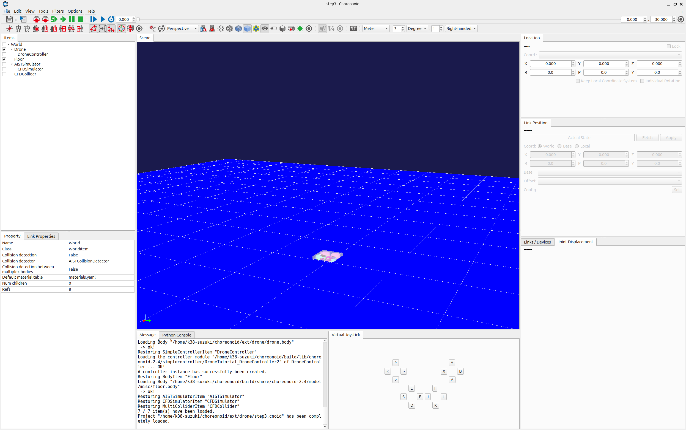
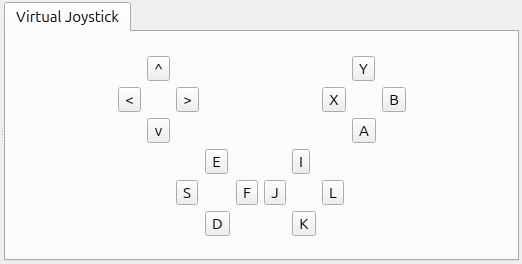
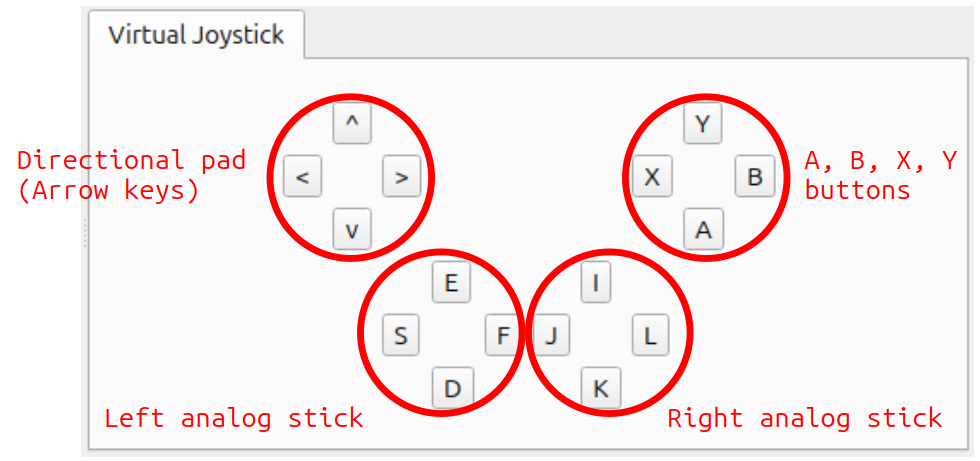

Step 3: Controlling the drone with a gamepad
In Step 2, we created a controller to perform the minimum control required to stabilize the model, and we learned how to implement and import that controller. In Step 3, we attempt to create a slightly more complex controller.
Gamepad setup
The controller we will be creating in this step is used to control the Drone model using a gamepad (joystick). To do so, begin by obtaining a gamepad and connecting it to your computer. Note that you can still perform this even without an actual gamepad. In this case, you can alternatively use the Virtual Joystick View. You can proceed to the next section on Virtual joystick view setup. The below explanation presumes use of an actual gamepad. This tutorial also presumes a gamepad with a layout like that seen below.
This product is the Logicool F310; other similar gamepads include the PlayStation 3 and 4 gamepads (DualShock 3 and 4) and the Xbox gamepad. If using other gamepads, the axes and placement of buttons may not correspond and fail to operate properly. In that case, you will need to change the axes and button IDs indicated in the source code in order to remap the controller. A convenient tool to determine whether the gamepad is detected by the OS and whether the axes and button mappings are correct is the “jstest” command. If the gamepad does not function properly, check it using this command. On Ubuntu, execute the below from the command line:
sudo apt-get install joystick
to install the package. Use, e.g.,:
jstest /dev/input/js0
to execute it. The command argument indicates the device file for the gamepad. “js0” here corresponds to the first gamepad connected and assigned an ID of 0. Ordinarily, this would be the one used. If you want to use two or more gamepads, you would use devices js1 and js2. However, note that this requires changing the source code. Connecting the gamepad and executing the command above will return information like the below to the console.:
Driver version is 2.1.0.
Joystick (Logitech Gamepad F310) has 8 axes (X, Y, Z, Rx, Ry, Rz, Hat0X, Hat0Y)
and 11 buttons (BtnX, BtnY, BtnTL, BtnTR, BtnTR2, BtnSelect, BtnThumbL, BtnThumbR, ?, ?, ?).
Testing ... (interrupt to exit)
Axes: 0: 0 1: 0 2:-32767 3: 0 4: 0 5:-32767 6: 0 7: 0 Buttons: 0:off 1:off 2:off 3:off 4:off 5:off 6:off 7:off 8:off 9:off 10:off
Manipulating the gamepad axes and buttons will change the output. This lets you confirm the connection status and the mapping of the axes and buttons. If you do not get this output or if the gamepad does not produce different output when manipulated, it might not be connected properly. Check your connection method and the gamepad status and try again.
注釈
The Joystick class used below to handle input from joysticks contains functionality to calibrate the common position of axes and buttons (ID values) for each type of gamepad.This allows the same program to be used by the above gamepad. However, the ID values used within the program may not necessarily correspond to those output by jstest, so use caution.
Virtual joystick view setup
If you do not have a gamepad, you can use the Virtual Joystick View. This is accessed by selecting View, Display Views, and Virtual Joystick from the Main Menu. The external appearance is as below.

This appears in the same area as the Message View usually situated on the bottom of the main window. This causes messages to be hidden, so you should change the view layout in order to be able to use both the Message View and Virtual Joystick View at the same time. You could reconfigure the layout as below.

Once a gamepad is connected, its input takes precedence. If using the Virtual Joystick View, ensure that there is no gamepad connected at that time. This completes the setup process.
Controller source code
The source code for the controller we will be creating is below. This code takes DroneController1, which we worked on in Step 2, and adds functionality to control the thrusts and anti-torques of the rotor devices via a gamepad.
#include <cnoid/EigenUtil>
#include <cnoid/Format>
#include <cnoid/Rotor>
#include <cnoid/SimpleController>
#include <cnoid/SimplePilot>
#include <map>
#include <string>
#include <vector>
using namespace std;
using namespace cnoid;
namespace {
const double MAX_TILT_ANGLE = 80.0;
const double delta[] = { 0.5, 4.0, 4.0, 2.1 };
const double pgain[] = { 0.08, 0.003, 0.003, 0.00002 };
const double dgain[] = { 0.02, 0.002, 0.002, 0.00001 };
} // namespace
class DroneController2 : public SimpleController
{
SimplePilot pilot;
DeviceList<Rotor> rotors;
Vector4 zref;
Vector4 dzref;
Vector2 dxref;
std::ostream* os;
public:
virtual bool initialize(SimpleControllerIO* io) override
{
Body* body = io->body();
os = &io->os();
rotors = body->devices();
pilot.setStickMode(SimplePilot::MODE2);
pilot.setMaxTiltAngle(radian(MAX_TILT_ANGLE));
if(pilot.initialize(io)) {
if(!pilot.findImu("Imu")) {
return false;
}
if(!pilot.findBatteryDevice("FlightBattery")) {
return false;
}
}
for(auto& rotor : rotors) {
io->enableInput(rotor);
}
zref = pilot.zrpy();
dzref = Vector4::Zero();
dxref = Vector2::Zero();
return true;
}
virtual bool control() override
{
pilot.readCurrentState();
static const int controlID[] = {
SimplePilot::THROTTLE, SimplePilot::AILERON, SimplePilot::ELEVATOR, SimplePilot::RUDDER
};
double pos[4];
for(int i = 0; i < 4; ++i) {
pos[i] = pilot.getPosition(controlID[i]);
if(fabs(pos[i]) < 0.2) {
pos[i] = 0.0;
}
}
Vector4 fz = Vector4::Zero();
Vector4 z = pilot.zrpy();
Vector4 dz = pilot.dzrpy();
Vector4 ddz = pilot.ddzrpy();
Vector2 dx_local = pilot.dxy_local();
Vector2 ddx_local = pilot.ddxy_local();
double gc = pilot.gravityCompensation(4);
static const double P = 1.0;
static const double D = 1.0;
for(int i = 0; i < 4; ++i) {
if(i == 0 || i == 3) {
dzref[i] = -delta[i] * pos[i];
fz[i] = (dzref[i] - dz[i]) * pgain[i] + (0.0 - ddz[i]) * dgain[i];
} else {
int j = i - 1;
dxref[j] = -delta[i] * pos[i];
zref[i] = P * (dxref[j] - dx_local[1 - j]) + D * (0.0 - ddx_local[1 - j]);
zref[i] = (i != 1 ? 1.0 : -1.0) * zref[i];
fz[i] = (zref[i] - z[i]) * pgain[i] + (0.0 - dz[i]) * dgain[i];
}
}
if(pilot.arm(SimplePilot::L_STICK_INWARD, 1.0) == SimplePilot::isReady) {
(*os) << "Ready for takeoff." << std::endl;
}
static const double ATD[] = { -1.0, 1.0, -1.0, 1.0 };
double thr[4] = { 0.0 };
if(pilot.on()) {
thr[0] = gc + fz[0] - fz[1] - fz[2] - fz[3];
thr[1] = gc + fz[0] + fz[1] - fz[2] + fz[3];
thr[2] = gc + fz[0] + fz[1] + fz[2] - fz[3];
thr[3] = gc + fz[0] - fz[1] + fz[2] + fz[3];
}
for(size_t i = 0; i < rotors.size(); ++i) {
Rotor* rotor = rotors[i];
rotor->thrust() = thr[i];
rotor->torque() = ATD[i] * thr[i];
rotor->notifyStateChange();
}
return true;
}
};
CNOID_IMPLEMENT_SIMPLE_CONTROLLER_FACTORY(DroneController2)
Controller compilation
Enter and save the source code above and recompile. The process is the same as described in Step 2. Save the source code to a file named DroneController2.cpp in the project directory and add the below code to CMakeLists.txt.:
add_cnoid_simple_controller(DroneTutorial_DroneController2 DroneController2.cpp)
target_link_libraries(DroneTutorial_DroneController2 CnoidCFDPlugin)
Now, when you compile Choreonoid, the controller will also be compiled, and a file called DroneTutorial_DroneController2so will be generated in the controller directory.
Swapping controllers
Now, let’s try using this controller as a controller for the Drone model. You should still have the project you created in Step 2. All you have to do is change the controller settings. Carry out the Setting the controller body described in Step 2 and ensure that you overwrite the DroneTutorial_DroneController2.so file we created previously. This completes the controller setup. Now, save this project as step3.cnoid.
Drone operation
Now, let’s run the simulation.
The gamepad should now be working to control the Drone model. Try moving it around. If you are using an F310, the right analog stick should let you move the Drone model. Try moving its axis. For other gamepads, you can experiment to see which axes correspond, etc. If things do not function as intended, try changing the axis settings in your source code. This will be explained in the next section. If using the Virtual Joystick View, you can manipulate the view using the keyboard. The buttons onscreen correspond to the directional pad and analog stick axes of a gamepad, as well as the buttons. The correspondence is explained in the image below.

If you look at the F310 in the context of this image, you will see how the main axes of the analog sticks and buttons on the F310 correspond. Use the J and L buttons on the keyboard to control the yaw rotation of the gun turret and the I and K keys to control the pitch rotation. One note is that the Virtual Joystick View will not work unless the keyboard is in focus. Therefore, you must click the mouse in the view or otherwise regain focus. If you change the viewpoint of the Scene View while manipulating a model, the focus will shift to that new view. You must click the Virtual Joystick View again to regain focus. Were you able to move the Drone model as intended? As you can see, you can achieve a range of functionality to manipulate the model depending on how you configure your gamepad. Taking input from external devices allows you to add more functionality to your controllers.
How this implementation works
Now editing...